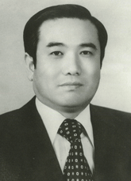

본인은 1975년 3월부터 1976년 2월까지 가족계획연구원 부원장과 1976년 3월부터 1978년 11월까지 동 연구원 원장을 역임하였다. 개원 40주년을 맞이한 한국보건사회연구원 개원의 작은
토대가 된 가족계획연구원 설립과정에서 외원 관련 상황과 국제기관들의 참여를 회고하고자 한다.
1960년 초반 가족계획사업을 국가재건정책의 일환으로 활발히 추진하던 때에 본인은 1967년 6월 보건사회부 보건국 모자보건과장(후일 가족계획과로 개칭)으로 부임하였다. 이때 당시 보건국장이신
김택일 박사의 지도와 가족계획협회 이사장이신 양재모 박사의 큰 협조로 가족계획연구원 신축과 관련된 외원유치 작업이 시작되었다. 13개월간의 스웨덴 정부기관과의 협상이 결실을 맺어 1968년 7월
7일 보건사회부장관실에서 스웨덴 국제개발처 대표(Dr. Odelberg, 스웨덴 카로린스카 의과대학 학장 겸 원장)와 정희섭 장관 간에 다음과 같은 협약이 체결되었다. 협약의 내용은
국립보건연구원
대지(39,600㎡)에 냉난방시설을 갖춘 강당,
100명을 수용할 수 있는 기숙사와 식당, 강의실, 연구실 등을 포함한 3층 건물을 미화 50만 불을 투입하여 건축하고 개원 후 5년간 매년 미화 7만 불씩 연구원 운영자금으로 보조하기로
하였다.
또 현존하는 도시형 시범보건소인 서울시 성동보건소(서울대학교시범연구소: 권이혁 박사 지도)와 농촌형 시범보건소(연세대학 시범연구소: 양재모 박사 지도)에 각각 미화 2만 불을 지원하고, 특히
보건
및 가족계획 홍보자료 제작을 위하여 미화 1만 불씩을 별도 지원하기로 합의하였다. 또한 협정문에 명기되어 있는 중요한 지원목적의 하나인 한국가족계획사업의 성공적인 실천경험을 통하여 아시아지역 각
국가 보건관계 종사자들의 교육훈련과 연구사업 증진에 연구원이 지도적 역할을 해줄 것에 합의하였다.
스웨덴국제개발처(SIDA)가 제공한 가족계획연구원의 신축을 계기로 국내적으로는 가족계획사업의 연구평가와 종사자들의 훈련에 큰 보탬이 되었을 뿐만 아니라 국제적으로는 세계 개발도상국가들의
가족계획사업
요원들의 실습장으로 활용됨으로써 많은 국제기관의 관심의 대상이 되었다. 보다 많은 연구와 교육훈련을 위하여 세계은행에서 그 당시로는 거액인 미화 600만 불을 기금형태로 제공하였으며, 또한
뉴욕에
본부를 둔 록펠러 재단 이사장인 John D. Rockefeller 2세도 1977년 3월 연구원을 방문하여 많은 관심
과 지원의사를 표명했다. 이를 계기로 1976년부터 하와이 동서문화연구소(East-West Center)는 세계 개발도상국가들의 가족계획 종사자들을 하와이에서 2주간 이론교육을 시행하고 매년
40~50명씩 연구원에 파견하여 숙식하며 10일간 실무교육을 시행하였다.
또한 사업 초창기부터 미국인구협회(Population Council, NewYork)는 서울사무소를 연구원에 개설하여 연구사업 평가를 위한 전
문인력을 주재시켜 활발한 연구사업을 지원하였다.
1968년 7월 가족계획연구원 신축에 관한 협정이 체결된 이후 7년 7개월 후에 본인이 미국 유학에서 돌아와 원장으로 재임할 때 협정
체결 당사자인 Dr. Odelberg 부부를 초청하였고, 1976년 2월 15일 본원에 개인자격으로 방문하여 그 당시 신현학 장관이 전달한 감사패와 기념품을 원장실에서 증정하였다.
본인이 가족계획과장으로 재임할 때 가족계획연구원 신축에 관한 협정을 체결하였다. 그 후 신축된 건물에서 원장직을 수행할 수 있었
던 것은 큰 보람으로 기억되고 있으며, 모든 시설이 잘 구비된 물리적인 여건이 많은 외원기관들의 관심의 대상이 되었다. 그 결과 유능
한 연구인력을 확보할 수 있는 여건이 조성되었으며, 이에 수반하여 훌륭한연구업적의 창출을 가능하게 한 그 당시 연구원 전 종사자들에게 감사와 찬사를 드린다.
home > 기관 역사 > 역대 기관장
역대 기관장List of Presidents
가족계획연구원(1971.~1981.)
역대 부원장
-
김용완 부원장
1971.10.01~1975.05.20 -
이문기 부원장
1973.08.22~1974.09.08 -
안계춘 부원장
1976.04.01~1977.04.28 -
공석
1977.07.06~1978.11.07 -
이시백 부원장
1978.11.07~1981.06.17 -
심달섭 부원장
1981.07.01~1982.03.22 -
김용완 부원장
1971.10.01~1975.05.20 -
이문기 부원장
1973.08.22~1974.09.08 -
안계춘 부원장
1976.04.01~1977.04.28
가족계획연구원
제 3대 한대우 원장 1976.02.20.~1978.11.07.
-
주요학력
- · 경북대 의학
- · 미, 미시간대 보건학 석사
- · 경북대 의학 박사
- · 미, 미시간대 보건행정학 박사
-
주요약력
- · 가족계획연구원 부원장
- · 보건사회부 가족계획과장
- · 경북대 의대교수
-
주요약력
- 가족계획연구원은 국민보건의료 · 국민연금 · 건강보험 · 사회복지 및 사회정책과 관련된 제 부문의 정책 과제를 현실적이고 체계적으로 연구 분석하고 주요정책과제에 대한 국민의 의견수렴과 이해증진을 위한 활동을 수행함으로써 국가의 장·단기 보건 의료 사회복지 정책수립에 이바지함을 목적으로 한다.
-
활동 관련 자료
- 1990-01 1989년도 연구결과요약종합보고서
- 1990-02 사회복지시설 정부지원금에 관한 연구
- 1990-03 대진료권내 3차진료기관에 관한 연구
- 1990-04 전국사망력조사보고
- 1990-05 1990년도 환자조사 표본 및 조사표설계
- 1990-06 농촌지역 한방보건의료 시범사업을 위한 기초조사보고서
- 1990-07 HIV 감염의 고위험집단 (동성연애자) 실태조사 보고서
- 1990-08 90년대 보건의료정책의 발전방향
- 1990-09 노인부양에 관한 연구
- 1990-10 정부가족계획사업평가
- 1990-11 한국의 적정인구 증가율에 관한 연구
- 1990-12 가족계획사업 운영개선방향에 관한 연구
- 가족계획연구원장 한대우 씨 승진발령 [1976-02-24, 동아일보]
X 닫기
1976-1978
가족계획연구원의 창립을 회고하며

가족계획연구원 3대 원장
한 대 우
(1976.02.20. ~ 1978.11.07.)